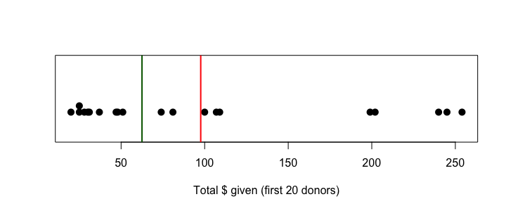

- ① The Donors Dataset ／ Measures of Center: The Mean
- ② Statistics vs Parameters & Sample vs Populations
- ③ Measures of Center: The Median
- ④ The Trimmed Mean & the Mode
平均と NA
記述統計（descriptive statistics）は、データを数値やグラフで要約・描写することです。データを調べ始める段階は探索的データ分析（EDA）とも呼ばれます。まず donors の最初の20人を取り出します。
donors <- read.csv("donors.csv") donors1_20 <- donors[1:20, ] donors1_20$age
平均（mean）は「合計 ÷ 個数」です。式で書くと x̄ = Σxᵢ / n。ところが mean() をそのまま使うと…
mean(donors1_20$age) mean(donors1_20$age, na.rm = TRUE)
年齢に NA（欠損）が混じっているので、R は NA を返します。「データがまだきれいではない」と教えてくれているのです。na.rm = TRUE（NA を remove）で、欠損を除いた12人の平均 60.5 歳が出ます。
length(donors1_20$age) は NA を含めて 20 を返します。手計算するときは「合計 ÷ 20」ではなく「合計 ÷ NA でない個数（12）」です。sum(!is.na(x)) で NA でない個数を数えられます。統計量と母数、標本と母集団
最初の20人は標本（sample）、95,412人全体を母集団（population）と考えてみます。
| 標本 sample | 母集団 population | |
|---|---|---|
| 計算した値の名前 | 統計量 statistic | 母数 parameter |
| 平均の記号 | x̄（エックスバー） | μ（ミュー） |
| ふつうは | 手元にある | わからない（推定したい） |
mean(donors1_20$age, na.rm = TRUE) # 統計量 x-bar mean(donors$age, na.rm = TRUE) # 母数 mu
x̄ = 60.5、μ ≈ 61.61 で近い値です。ただしこれは運が良かっただけかもしれません。「最初の20行」は便宜的に選んだだけで、母集団を代表する保証がないからです。ランダム標本なら代表的になりやすいです。
set.seed(550) rand20 <- donors[sample(nrow(donors), 20), ] mean(rand20$age, na.rm = TRUE)
中央値と「外れ値への強さ」
中央値（median）は、値を小さい順に並べた真ん中です。個数が偶数なら真ん中2つの平均です。
median(c(1, 5, 7, 10, 12)) median(c(1, 5, 7, 10))
最初の20人の寄付総額で、平均と中央値を比べます。
mean(donors1_20$totalGivingAmount) median(donors1_20$totalGivingAmount)
平均 97.65 に対して中央値 62.5。大きく違うのは、200ドル超の寄付者が数人いるからです。ドットプロット（R では stripchart()）で見てみます。
x <- donors1_20$totalGivingAmount stripchart(x, method = "stack", pch = 16, cex = 1.4, ylim = c(0, 3), xlab = "Total $ given (first 20 donors)") abline(v = mean(x), col = "red", lwd = 2) # mean abline(v = median(x), col = "darkgreen", lwd = 2) # median

平均（赤）は右の大きな値に引っぱられ、中央値（緑）は多数派の近くにとどまります。平均は外れ値に敏感（sensitive）、中央値は頑健（resistant）です。
10人のうち1人が大金持ちだと、平均年収はぐっと上がるけど、真ん中の人の年収（中央値）はほとんど変わらない。
トリム平均と最頻値
トリム平均（trimmed mean）は、上下の端を一定割合切り捨ててから平均をとります。平均より頑健で、中央値より多くのデータを使います。よく使うのは 10% トリム（上10%・下10% を除く）です。
mean(donors$totalGivingAmount) mean(donors$totalGivingAmount, trim = 0.10) mean(donors$totalGivingAmount, trim = 0.25) median(donors$totalGivingAmount)
切る割合を増やすほど、値は中央値（78）に近づきます（trim = 0.5 にすると中央値と同じ）。
最頻値（mode）
いちばん多く現れる値です。量的・質的どちらにも使えますが、R に組み込みの関数はありません。table() で数えて最大のものを探します。山が2つあれば二峰性（bimodal）で、「中心」より形の情報として役立ちます。
bimodal_data <- c(rep(0, 9), 1, 3, 4, 5, 6, 8, rep(10, 9)) table(bimodal_data) mean(bimodal_data); median(bimodal_data)
donors$numberGifts（寄付回数）の平均・中央値・10%トリム平均を求めてください。
mean(donors$numberGifts) median(donors$numberGifts) mean(donors$numberGifts, trim = 0.1)
平均 9.6、中央値 7、10%トリム平均 8.3（その間）。平均 > 中央値なので右に裾が長い分布と予想できる（次の回でヒストグラムで確認）。